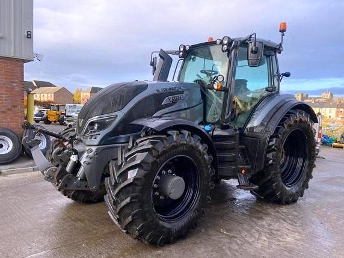

Valtra T234

Valtra T234 – це один із найпотужніших представників серії T, який ідеально поєднує скандинавську витривалість із передовими технологіями. Ця модель розроблена для важких польових робіт, великих транспортних навантажень та інтенсивної роботи з валом відбору потужності.
Трактор вирізняється своєю універсальністю та можливістю працювати в обох напрямках завдяки системі реверсивного керування TwinTrac. У версіях Versu та Direct машина комплектується інноваційним підлокітником SmartTouch, який вважається одним із найзручніших в індустрії: він об’єднує керування трансмісією, гідравлікою та системами точного землеробства (Valtra Guide) на одному сенсорному екрані. Завдяки пневматичній підвісці переднього моста AIRES та кабіні з чудовою шумоізоляцією, T234 забезпечує неперевершений комфорт оператора навіть у найсуворіших умовах експлуатації.
| Характеристика | Значення |
|---|---|
| Клас тяги | 4.0 |
| Тип ходової частини | колісний |
| Колісна формула | 4х4 (полний привід) |
| Тип рами | класична (цільна) |
| Основне призначення | важкі с/г роботи: оранка 5-6 корпусними плугами, глибоке розпушування, посів широкозахопними агрегатами, транспортні роботи |
| Параметр | Значення |
|---|---|
| Модель | AGCO Power 74 LFTN-D5 |
| Тип двигуна | шестициліндровий дизель з турбонаддувом та інтеркулером |
| Спосіб охолодження | рідинне (водяне) |
| Розташування циліндрів | рядне, вертикальне (6 циліндрів) |
| Діаметр циліндра/хід поршня | 108 мм / 134 мм |
| Робочий об’єм | 7,4 л |
| Номінальна потужність | 162 кВт (220 к.с.) |
| Максимальна потужність (boost) | 184 кВт (250 к.с.) |
| Номінальні оберти | 2100 об/хв |
| Система пуску | електростартер |
| Питома витрата палива | 185–195 г/кВт.год |
| Параметр | Значення |
|---|---|
| Муфта зчеплення | багатодискова в оливній ванні |
| Тип КПП | роботизована PowerShift (Versu/Active) |
| Кількість передач | 30 вперед / 30 назад |
| Кількість діапазонів | 5 (LL, A, B, C, D) |
| Діапазон швидкостей (вперед) | 0,6 – 40/53 км/год |
| Вал відбору потужності | задній незалежний, 540/540E/1000 або 540E/1000/1000E |
| Номер діапазону | Номер передачі | Теоретична швидкість, км/год | Передаточне число (заг.) | Тягове зусилля, кН |
|---|---|---|---|---|
| LL (Creeper) | 1 | 0,60 | 540,0 | 92,00 |
| LL (Creeper) | 2 | 0,73 | 442,6 | 91,80 |
| LL (Creeper) | 3 | 0,89 | 362,8 | 91,50 |
| LL (Creeper) | 4 | 1,09 | 297,4 | 91,00 |
| LL (Creeper) | 5 | 1,33 | 243,7 | 90,50 |
| LL (Creeper) | 6 | 1,63 | 199,8 | 90,00 |
| A (Робочий) | 1 | 2,86 | 148,0 | 88,50 |
| A (Робочий) | 2 | 3,49 | 121,3 | 86,20 |
| A (Робочий) | 3 | 4,26 | 99,4 | 82,10 |
| A (Робочий) | 4 | 5,21 | 81,4 | 78,40 |
| A (Робочий) | 5 | 6,36 | 66,6 | 72,30 |
| A (Робочий) | 6 | 7,77 | 54,6 | 65,20 |
| B (Польовий) | 1 | 5,52 | 76,8 | 68,10 |
| B (Польовий) | 2 | 6,75 | 62,9 | 62,40 |
| B (Польовий) | 3 | 8,24 | 51,5 | 55,80 |
| B (Польовий) | 4 | 10,07 | 42,2 | 47,20 |
| B (Польовий) | 5 | 12,30 | 34,5 | 40,50 |
| B (Польовий) | 6 | 15,02 | 28,3 | 34,10 |
| C (Транспорт) | 1 | 11,54 | 36,7 | 36,40 |
| C (Транспорт) | 2 | 14,10 | 30,1 | 31,20 |
| C (Транспорт) | 3 | 17,23 | 24,6 | 27,50 |
| C (Транспорт) | 4 | 21,05 | 20,2 | 22,10 |
| C (Транспорт) | 5 | 25,72 | 16,5 | 18,20 |
| C (Транспорт) | 6 | 31,41 | 13,5 | 15,10 |
| D (Шосейний) | 1 | 17,94 | 23,6 | 26,30 |
| D (Шосейний) | 2 | 21,93 | 19,3 | 21,10 |
| D (Шосейний) | 3 | 26,79 | 15,8 | 17,50 |
| D (Шосейний) | 4 | 32,73 | 13,0 | 14,20 |
| D (Шосейний) | 5 | 40,00 | 10,6 | 10,40 |
| D (Шосейний) | 6 | 53,00* | 8,1 | 6,80 |
Примітка: Примітка: Швидкість 53 км/год досягається на моделях з активованою опцією High Speed. Тягове зусилля на перших передачах обмежене програмно для запобігання пошкодженню елементів трансмісії та надмірного буксування.
| Параметр | Значення |
|---|---|
| Тип коліс | пневматичні шини |
| Марка шин (типові) | 540/65R30 (передні) / 650/65R42 (задні) |
| Радіус ведучого колеса | ~0,95 м |
| Кількість коліс | 4 |
| Ведучі мости | обидва (передній з автоматичним керуванням) |
| Режим роботи | Значення |
|---|---|
| Під час роботи з навантаженням | 28,0 – 42,0 кг/год |
| Під час холостих переїздів | 8,0 – 10,0 кг/год |
| Під час зупинок (холостий хід) | 2,0 – 2,8 кг/год |
| Параметр | Значення |
|---|---|
| Маса експлуатаційна | 7300 кг (базова) / до 13500 кг (макс. допустима) |
| Довжина / Ширина / Висота | 5800 мм / 2550 мм / 3130 мм |
| Колія / База | 1840 мм / 2995 мм |
| Дорожній просвіт | 525 мм |
| Мінімальний радіус повороту | 5,25 м |
| Тип навісного пристрою | задній гідравлічний, триточковий (кат. 3) |
| Вантажопідйомність навіски | 9500 кгс |
| Об’єм паливного баку | 380 л (+ 70 л AdBlue) |
| Характеристика | Значення |
|---|---|
| Особливості кабіни | герметизована панорамна кабіна, рівень шуму 70 дБ, клімат-контроль |
| Гальма | багатодискові в оливній ванні з гідроприводом; пневматичний привід гальм причепа |
| Електрообладнання | напруга 12 В, АКБ 174 Аг, генератор 150/200 А |